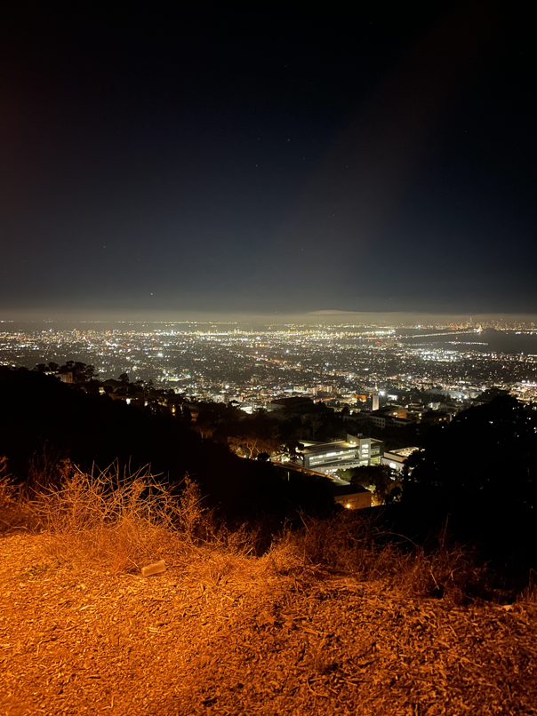
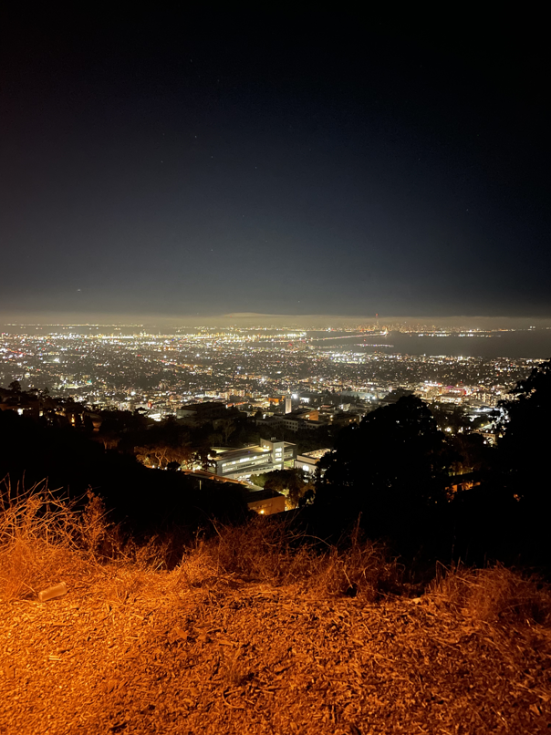
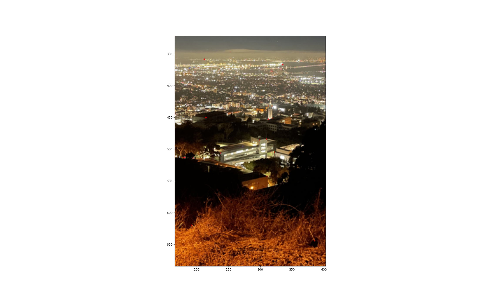
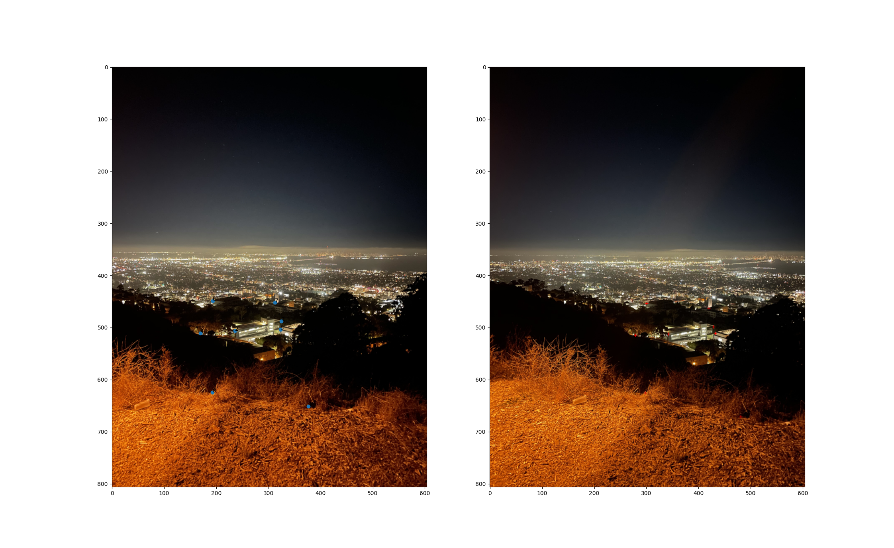
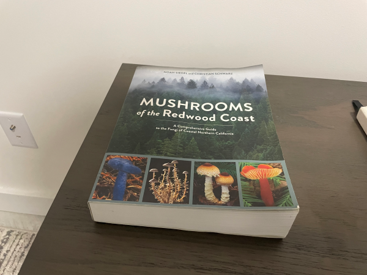
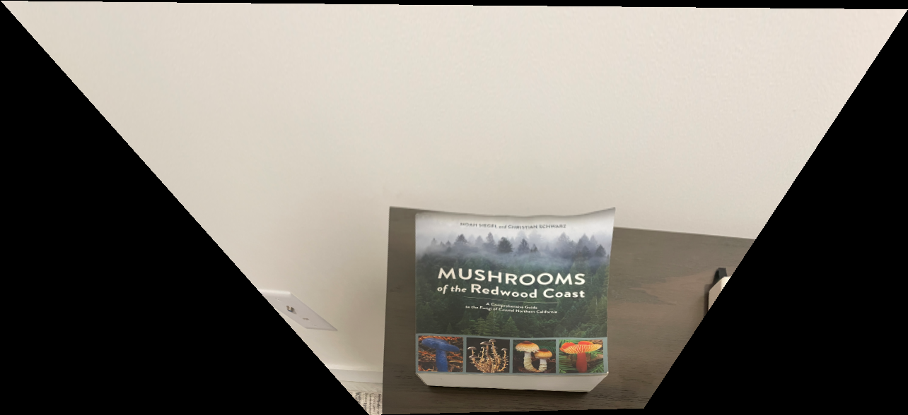
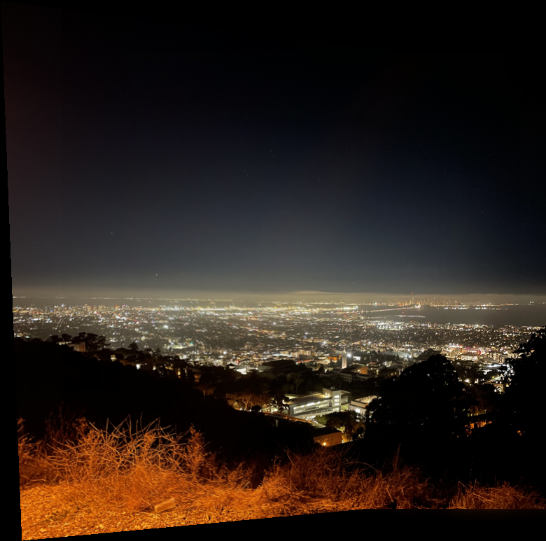

The goal of this project is to combine images into mosaics through perspective warping and matching keypoint locations.
In part 1, we capture a set of images and combine them into a mosaic by computing homographies with manually labeled keypoints.
To create an image mosaic the first thing that we need is images. For a perspective warp to work properly and actually show what one image would look one the same perspective plane as the other, the images must all be taken with the same center of projection. Otherwise, the effects of parallax combined with the 3d geometry of the scene makes it so each image in the scene observes fundamentally different things.
I went to Lawrence Hall of Science at night to capture the set of images I will be using for the mosaic. Here are the two images, I will use for the part 1 mosaic.
 
To perform a perspective warp, we must first extract the appropriate homography matrix. The homography matrix takes a set of points and transforms them to the locations of another set of points. It also satisfies the equation:
Where is a scaling factor for a corresponding point pair,
and
are a corresponding point pair, and
is a matrix of the form:
Given a set of corresponding points, we can form a system of linear equations, and solve for the 8 unknowns of the H matrix. We need at least 4 point pairs solve for H. To define the corresponding points, I wrote a script with ginput:
 
Given a homography matrix we implement a function to warp an image. We can find what position on the output image a given point on the input image corresponds to be multiplying each point by H to get output point
and dividing by
. We use
scipy.interpolate.griddata to interpolate between known values.
We can demonstrate our homography warping computations work we can “rectify” an image, that is take a rectangular object that is imaged off axis, and warp it to a rectangle. I do this by mapping a the corners to a new set of points formed from the row and column averages of each side of the original rectangle. The new points are created in a rectangle. I do so with an image of a book:
 
As a note, the deviation from being rectangular in the top right corner comes from a physical bend in the book and not a flaw in the algorithm.
If we define point correspondences between many taken from the same center of projection, and sequentially warp them to match, and blend the images together, we can form an image mosaic. The images are combined with a mask formed by applying a distance filter on the overlapping regions of the final warped images. This mask is applied using a 2 layer laplacian stack in order to create smoother blending. My final image mosaic is shown below:
